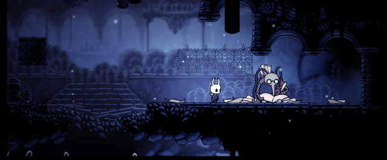

Forje seu caminho em Hollow Knight! Uma aventura de ação épica em um vasto reino arruinado de insetos e heróis. Explore cavernas serpenteantes, lute contra criaturas malignas e alie-se a insetos bizarros num estilo clássico 2D desenhado à mão.

"Team Cherry é uma pequena equipe de jogos indie em Adelaide, S Australia. Nossa missão é construir mundos loucos e emocionantes para você explorar e conquistar.""
Hollow Knight é o primeiro lançamento do Team Cherry. Sua equipe inicialmente se formou em torno de game jams, mas eles se uniram por causa de seu amor por Zelda 2 . Embora todos tenham trabalhado em jogos no passado, Hollow Knight é o ponto culminante das coisas que eles amam nos jogos. Em 2017, eles começaram a trabalhar na sequência do jogo original: Hollow Knight: Silksong .


Afortunado
Adquira seu primeiro Amuleto

Falsidade
Derrote o Falso Cavaleiro

Teste de Resolução
Derrote Hornet no Caminho Verde

Conexão
Abra metade das Estações de Besouro de Hallownest

Protegido
Adquira 4 Fragmentos de Máscara
Nossa cidade está quieta, você vê. Os outros residentes, todos eles desapareceram. Desceu aquele poço, um por um, nas cavernas abaixo.
Dirtmouth é a primeira cidade a caminho de Hallownest, localizada no vale entre Penhasco Uivante e Cidade de cristal. Em Hollow Knight, inicialmente tem apenas um residente, mas mais insetos podem retornar ou se mudar para a cidade dependendo de certos eventos.

É a primeira área completa que o jogador explora, e onde ele encontrará a maioria dos NPCs que retornarão a Dirtmouth. Depois de adquirir as Asas do Monarca ou matar um dos Sonhadores, a Infecção estará espalhada pela Encruzilhada, com pústulas laranjas aparecendo no ambiente. A navegação fica mais difícil devido à infecção fechando alguns caminhos. Além disso, a maioria dos inimigos comuns é substituída por versões mais fortes.
Mercadorias e viajantes costumavam passar por essas estradas antigas. Elas caíram a ruína há muito tempo e se tornaram infestadas com insetos agresivos e carcaças de antigos moradores.
A mente maior uma vez sonhou com folhas e assim lançou essas cavernas. Em cada arbusto e cada videira a mente de Unn se revela para nós.
Caminho Verde é uma área a oeste da Encruzilhada Esquecida com vegetação exuberante, guardada por uma espécie de inseto frondoso. Poças de ácido ardente e vegetação espessa dificultam a navegação.